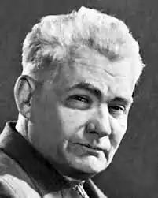

Український письменник, літературознавець.
Правнук Катерини Шевченко, улюбленої сестри Тараса Григоровича Шевченка, яка була другом маленького Тараса, доглядала його й виховувала.
Генеалогічне дерево Дмитра Красицького свідчить, що його прабабкою була Катерина Григорівна Шевченко (1806–1850) – старша сестра геніального Кобзаря, яка в 1823 р. взяла шлюб з Антоном Григоровичем Красицьким (1794–1848). У них народилось 12 дітей, з яких до повноліття дожили лише четверо: Федір, Степан, Яким та Максим. Яким Антонович був дідом Дмитра Красицького по лінії батька Филимона Якимовича. Дмитро Филимонович Красицький народився 7 листопада 1901 року в с. Зелена Діброва Звенигородського району Черкаської області. У 1922 р. закінчив київський інститут народної освіти. Учасник війни. Був деканом історичного факультету Дніпропетровського державного університету, директором музею Д. Яворницького і Києво-Печерського історико-культурного заповідника (1946-1951). З 1951 по 1961 рр. – директор київського літературно-меморіального будинку Т. Шевченка і заступник київського музею Т. Шевченка. Свої вірші почав друкувати у 1918 році. Автор біографічних повістей, оповідань і нарисів про Т. Шевченка, серед яких "Дитинство Тараса", "Юність Тараса", (1959 р.), "Тарас — художник" (1971р.), "Смерть i похорони Шевченка" (1961 р.), "Великий Кобзар у пам'ятi народній" (1961 р.), "Тарасова земля" (1962р.), "Дітям про Шевченка" (1962 р.), "Роздуми над словом Шевченка" (1963 р.), "Тарасові світанки" (1967 р.), "I оживе добра слава" (1986 р.) та ін. Був в Острозі на відкритті пам'ятника Т. Шевченку у 1963 р., де виступив і подарував музеєві книгу "Вінок Тарасові Шевченку" з автографом "Острозькому музею в день відвідин. Дмитро Красицький. 20.ХІ. 1963". Помер Шевченків правнук на 88-му році життя – 8 січня 1989 року.